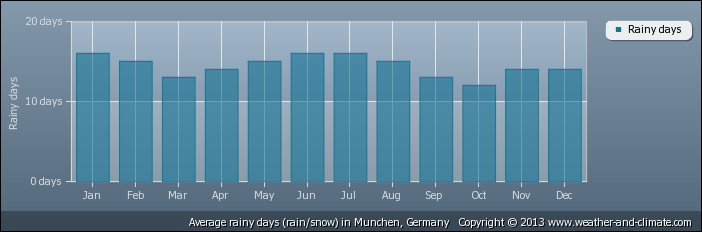
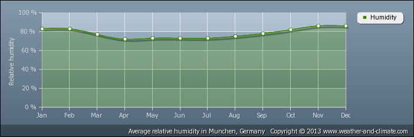

<DOCTYPE html>
<html>
  <head>
    <link rel="stylesheet" href="//code.jquery.com/ui/1.11.1/themes/smoothness/jquery-ui.css">
    <script src="//code.jquery.com/jquery-1.10.2.js"></script>
    <script src="//code.jquery.com/ui/1.11.1/jquery-ui.js"></script>
    <link rel="stylesheet" href="http://jqueryui.com/resources/demos/style.css">
    <script>
      $(function() {
        $( "#data" ).tabs();
        $( "#cities-toggle" ).buttonset();
        $( "#cities-toggle input").each(function(){
          $(this).click(function(){ 
            //console.info($(this).attr('id'))
            $('.' + $(this).attr('id') ).toggle()
          })
        })

      });
    </script>
  </head>
  <body>
    <div id='cities-toggle'>
      <input type="checkbox" id="vienna"><label for="vienna">Vienna</label></input>
      <input type="checkbox" id="frankfurt"><label for="frankfurt">Frankfurt</label></input>
      <input type="checkbox" id="munich"><label for="munich">M&uuml;nchen</label></input>
      <input type="checkbox" id="nurnberg"><label for="nurnberg">N&uuml;rnberg</label></input>
      <input type="checkbox" id="portland"><label for="portland">Portland</label></input>
    </div>

    <div id='data'>
      <ul>
        <li><a href='#average-raindays'>Rain Days</a></li>
        <li><a href='#average-rainfall'>Rainfall</a></li>
        <li><a href='#average-humidity'>Humidity</a></li>
        <li><a href='#average-sunshine'>Sunshine</a></li>
        <li><a href='#average-temperature'>Temperature</a></li>
        <li><a href='#average-windspeed'>Windspeed</a></li>
      </ul>

     <div id='average-raindays'>
        
        
        
        
        
      </div>

      <div id='average-rainfall'>
        
        
        
        
        
      </div>

      <div id='average-humidity'>
        
        
        
        
        
      </div>

      <div id='average-sunshine'>
        
        
        
        
        
      </div>

      <div id='average-temperature'>
        
        
        
        
        
      </div>
      
      <div id='average-windspeed'>
        
        
        
      </div>

     </div>
  </body>
</html>
